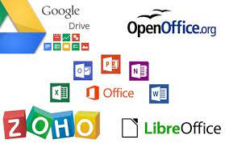

¿Qué es una aplicación ofimática y para qué sirve?
Para empezar, cabe acotar que el término “ofimática” se refiere al acrónimo de “oficina” e “informática”. De allí, la ofimática se puede definir como el conjunto de técnicas, aplicaciones y herramientas informáticas que se emplean en funciones de oficina con el objetivo de mejorar, optimizar y automatizar todos los procedimientos o tareas relacionadas. Esta, también se conoce como “automatización de oficinas” o “automatización de escritorios”.
¿Cuáles son las aplicaciones ofimáticas más utilizadas e importantes en la actualidad?
Ahora bien, te preguntarás cuales son los tipos de apps ofimáticas que existen y bien, las más usadas e importantes hoy en día; por lo que, en esta sección del post te damos a conocer las principales aplicaciones de dicha clase que también se pueden identificar como los elementos de integrantes de un paquete ofimático:
Microsoft Word. Se trata del procesador de texto más popular del mundo, una herramienta desarrollada por Microsoft que está enfocada en facilitar la creación, edición y modificación de documentos en forma de texto.
Microsoft Excel. Es un software de oficina desarrollado por Microsoft que consiste en una hoja de cálculo muy versátil para gestionar bases de datos, automatizar algoritmos aritméticos, realizar operaciones matemáticas y generar gráficas.
Microsoft Powerpoint. Desarrollado también por Microsoft es, sin duda, uno de los programas por excelencia para desarrollar presentaciones. Permite generar presentaciones dinámicas mediante la inserción de imágenes, vídeos y sonidos.
Microsoft Access. Este software diseñado por Microsoft facilita la creación y gestión de bases de datos, lo que lo convierte en un aliado perfecto para las tareas de contabilidad, el control de inventarios, el registro de libros y la gestión de pedidos y proveedores.
Outlook. Junto a Gmail, es uno de los programas de correo electrónico más utilizados. Además de facilitar el contacto con otras personas y el intercambio de archivos e información de manera virtual, permite administrar calendarios, gestionar reuniones y crear un directorio de contactos.

¿Cuáles serán las tecnologías del futuro que cambiarán el mundo tal y como lo conocemos hoy?
Sumado a ello y entre otros detalles, lo editores de imagen te ofrecen la posibilidad de crear ajustes de corrección, trabajar por medio de capas, modificar la resolución a tu gusto, etc.
Es oportuno acotar que, existen varios tipos y entre los más importantes ubicamos los siguientes:
De diseño: Usualmente, se trata de herramientas que simplifican la creación de gráficos y el retoque de imágenes con gran calidad.
De fotografía: De forma puntual, estas se encargan de retocar y manipular las imágenes y fotos a partir de varias herramientas que contienen.
De dibujo y pintura: Son aquellas que permiten la edición gráfica, de fotografías, mapas de bits, pueden crear y ver animaciones GIF, aplicar filtros y transformaciones, ajustar los colores en los elementos fotográficos, utilizar cuadros de vídeos y capturar cuadros desde cámaras de vídeo.
De animaciones: Proporcionan las opciones necesarias para convertir secuencias de vídeo en animaciones en formato GIF, PNG, JPEG, TIF y BPM.
De CAD: Básicamente, funcionan para la creación de diseños en 2D y 3D.
DE 3D: Te permiten diseñar y crear gráficos, netamente, en tres dimensiones.
Editores de presentaciones
En diversas ocasiones, debes hacer presentaciones para exponer algún trabajo en tu universidad o trabajo, por lo que te surge el requerimiento de recurrir a este tipo de programas o aplicaciones. Las cuales, facilitan la creación de atractivas presentaciones son suma rapidez y sencillez.